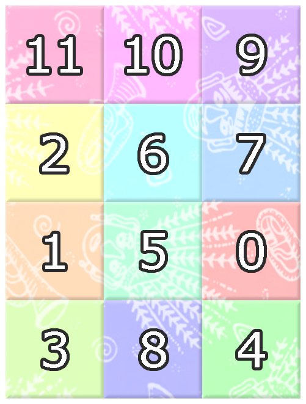
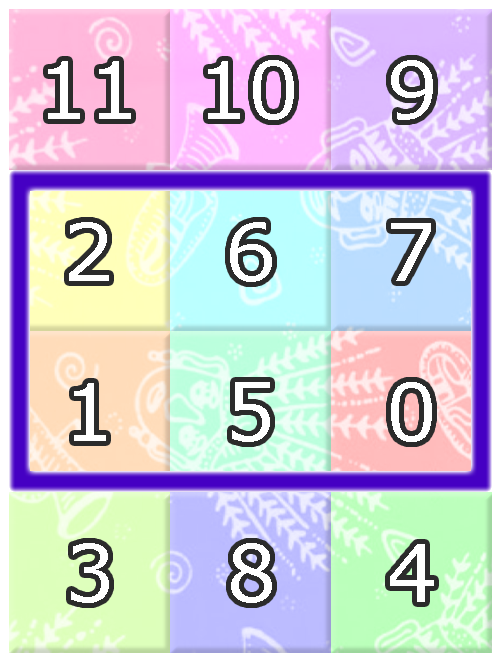
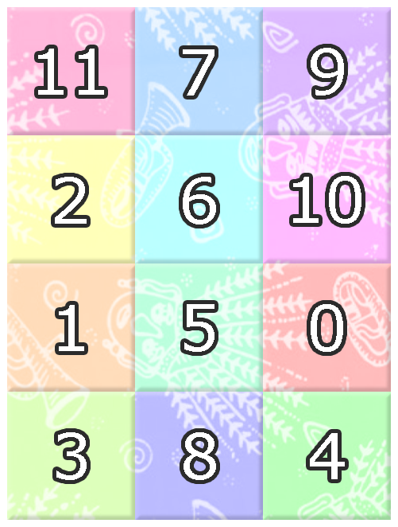
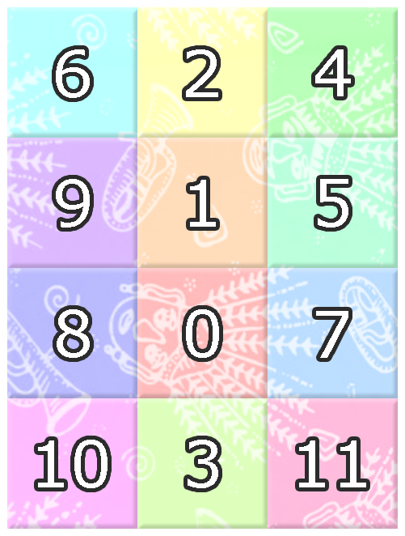
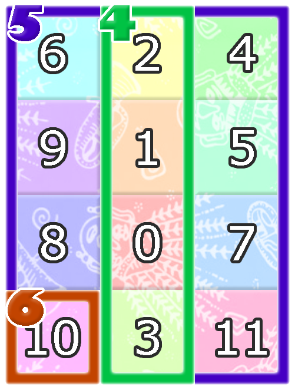

Pak Dengklek sangat tertarik dengan batik Betawi. Suatu hari, Pak Dengklek menemukan kain batik Betawi yang ajaib.
Kain batik yang ditemukan Pak Dengklek berbentuk persegi panjang yang terbagi menjadi petak-petak persegi dengan $N$ baris dan $M$ kolom. Baris-barisnya dinomori dari $1$ hingga $N$ dari atas ke bawah. Kolom-kolomnya dinomori dari $1$ hingga $M$ dari kiri ke kanan. Anggap $(r, c)$ menotasikan petak pada baris $r$ dan kolom $c$.
Terdapat $N \times M$ warna berbeda pada kain. Warna-warnanya dinomori dari $0$ hingga $N \times M - 1$. Awalnya, petak $(i, j)$ memiliki warna $A_{i,j}$ untuk setiap $1 \leq i \leq N$; $1 \leq j \leq M$. Diketahui bahwa tidak ada dua petak dengan warna sama pada awalnya.
Karena kain batik ini ajaib, Pak Dengklek bisa melakukan beberapa modifikasi terhadap warna-warna yang ada di kain ini. Akan terjadi $Q$ kejadian. Masing-masing kejadian merupakan salah satu dari tiga tipe berikut:
1 R1 C1 R2 C2 —
Petak $(R_1, C_1)$ dan $(R_2, C_2)$ bertukar warna.
2 W —
Setiap petak berubah warna dari warna $x$ menjadi warna $(x + W) \bmod (N \times M)$.
Catatan: $p \bmod q$ menotasikan sisa hasil membagi $p$ dengan $q$.
3 R1 C1 R2 C2 —
Pak Dengklek bertanya: apa warna dengan nomor terkecil yang tidak muncul pada seluruh petak $(r, c)$ yang memenuhi $R_1 \leq r \leq R_2$; $C_1 \leq c \leq C_2$?
Bantulah Pak Dengklek menjawab semua pertanyaannya!
Masukan diberikan dalam format berikut:
N M A1,1 A1,2 … A1,M A2,1 A2,2 … A2,M ⋮ ⋱ ⋮ AN,1 AN,2 … AN,M Q kejadian1 kejadian2 ⋮ kejadianQ
Untuk setiap kejadian tipe 3, keluarkan sebuah baris berisi sebuah bilangan bulat yang menyatakan nomor warna terkecil yang tidak muncul pada seluruh petak $(r, c)$ yang memenuhi $R_1 \leq r \leq R_2$; $C_1 \leq c \leq C_2$.
Khususnya, jika semua warna muncul, keluarkan -1.
4 3 11 10 9 2 6 7 1 5 0 3 8 4 6 3 2 1 3 3 1 2 3 1 2 2 7 3 1 2 4 2 3 1 1 4 3 3 4 1 4 1
3 4 -1 0
Awalnya, kain batiknya berbentuk sebagai berikut:

Kejadian ke-$1$ mempertanyakan bagian kain berikut:

Setelah kejadian ke-$2$, kain batiknya menjadi seperti berikut:

Setelah kejadian ke-$3$, kain batiknya menjadi seperti berikut:

Kejadian ke-$4$, ke-$5$, dan ke-$6$ mempertanyakan bagian-bagian kain berikut:

-1.